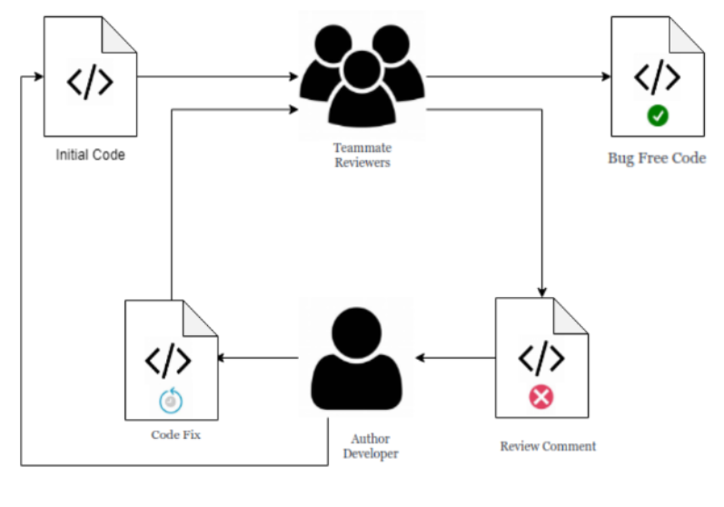
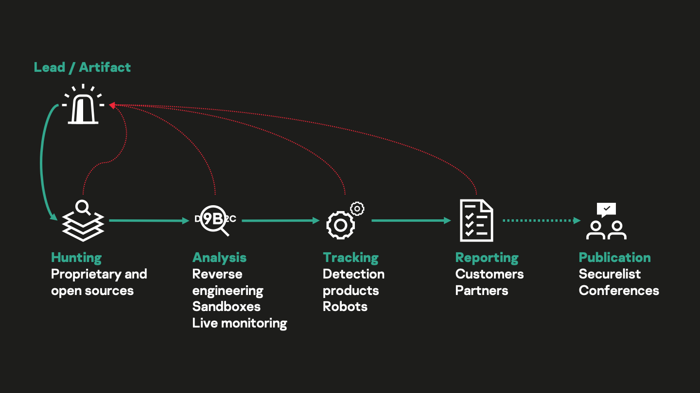
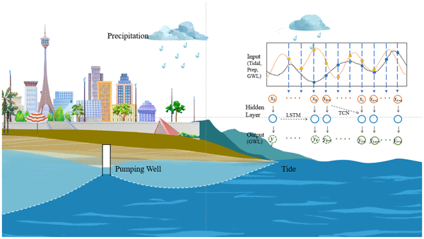
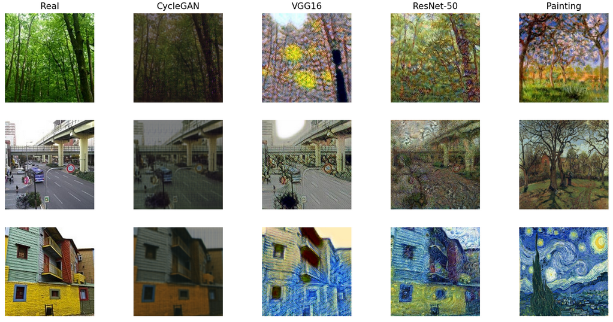
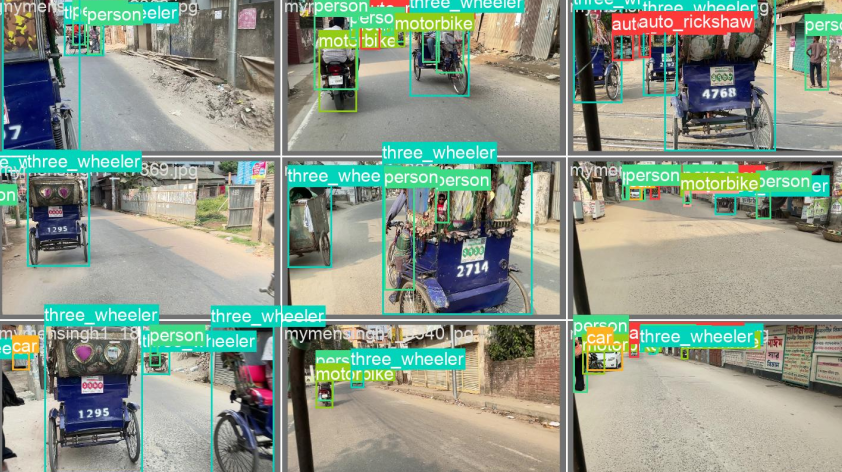

Ayesha Binte Mostofa
I'm Ayesha (she/her), a fresh graduate from the department of CSE, BUET. Currently, I am working as a full-time lecturer in the department of CSE, Canadian University of Bangladesh.
Since my undergraduate education, I have been actively engaged in academic research.
My undergraduate thesis focuses on Large Lanuguage Models in Automating Code Review Activities, under the guidance of
Professor Dr. Anindya Iqbal (BUET)
in collaboration with Dr. Toufique Ahmed (UC Davis) in the field of Natural Language Processing & Software Engineering.
Currently, I am working on a research project, extracting attack behaviors using threat intelligence under the supervision of Professor
Dr. Md. Shohrab Hossain (BUET). From June 2024, I have been working on a research project, forecasting ground level water using machine learning and deep learning
under the supervision of Professor Dr. A. B. M. Alim Al Islam (BUET) utilizing regression models and deep learning models.
Additionally, I have been actively participating in machine learning competitions.
My research interests include Systems and Network Security, Natural Language Processing, Robotics, Computer Vision, Deep Reinforcement
Learning, Human Computer Interaction.
I have done several projects on Machine Learning, Computer Vision, Computer Security, Computer Network, and Artificial Intelligence.
You can visit my
undergraduate lab coursework webpage
to obtain a concise overview of my professional works in my undergrad life. I will be applying for PhD programmes in Fall'25 session.
In addition to my academic pursuits, I have a passion for music and can play three types of instruments. For recreation, I enjoy developing games, doodling, traveling, and watching sitcoms.
email me at : ayeshaathoi62 [at] gmail [dot] com
Research Experience
Advancing Code Review and Code Refinement Automation Using Large Language Models
Manuscripting Phase | Abstract
Undergraduate Thesis, NLP Group, CSE-BUET
Prompting and PEFT techniques, augmenting static program metadata (function call graph) and natural language summary with human evaluation to improve code review and code refinement generation tasks
Tools and Technology: Python (Pytorch), TreeSitter, OpenAI GPT API, Gemini-Pro, CodeT5, CodeReviewer, QLoRa, Llama, CodeLlama

Attack Behavior Extraction using Threat Intelligence
Ongoing Research Project, Computer Security X Machine Learning
The primary objective of this research project is to develop an advanced methodology for extracting and analyzing attack behaviors from various threat intelligence sources.

Forecasting Ground level water using Machine Learning and Deep Learning
Ongoing Research Project, Human-Computer Interaction X Machine Learning
Using many types of regression models, we are trying to predict the ground level water in different regions of Bangladesh. We are also using deep learning models to predict the ground level water.

Education
Bangladesh University of Engineering and Technology
CGPA : 3.63/4.00
Advanced CGPA (3rd and 4th year) : 3.86/4.00
- Dean’s list award and university merit scholarship recipient in levels 3 and 4
Notable Courses : Machine Learning, Simulation and Modeling, Graph Theory, Artificial Intelligence, Bioinformatics, Software Engineering, Information System Design, Computer Security, Operating Systems, Compiler, Computer Networks, Data Structures and Algorithms, Database Systems, Computer Graphics, Discrete Mathematics, Object Oriented Programming
Undergraduate Lab Courseworks : Webpage
Skills :
| Programming Languages | C, C++, Java, JavaScript, Python, SQL, Assembly, Bash |
| Database | MySQL, OracleDB, PostgresDB |
| Frameworks | PyTorch, Keras, Tensorflow, SpringBoot, Node.JS, React.Js, BootStrap |
| Tools/Software | Git, GitHub, Docker, IntelliJ, PyCharm, Codeblocks, Navicat, Visual Studio, WireShark, emu 8086, Jupyter Notebook, NS2, Google Colab, Kaggle |
| Libraries | NumPy, Keras, Matplotlib, OpenCV, OpenGL, Pandas, Scikit Learn |
| Scripting | Latex, Overleaf, Linux Shell Script |
| Miscellaneous | HTML, CSS, SSH Accessing to Remote Server |
| Communication Medium | English, Bengali, Hindi |
Feni Girls' Cadet College
GPA: 5.00/5.00
Group : Science
Talent Pool Scholarship, 5th place holder (1st among girls) in Comilla board
Awards : Best in Academics award, Best Journal award, 1st Runner-up in Intra College Math Olympiad
Feni Girls' Cadet College
GPA: 5.00/5.00
Group : Science
Talent Pool Scholarship, 8th position holder in Comilla board
Activities : Music, Handball, Band Party Drummer, Current Affairs Display, Class Captain
Work Experience
Lecturer
Joined at CSE department under School of Science & Engineering. I find it a noble profession which gives an opportunity to shape the life of others and pursue one’s passion for a lifetime. I love to interact and connect with my students.
Machine Learning Intern
Contributed to developing an Android App for Client-side verification of National ID Card images, using Android Studio, openCV, and TensorflowLite.
NOTABLE Projects

Paint like Your Favourite Artist
This project is based on this paper Paint like Vincent Van Gogh: Artistic Style Generator Using CycleGAN and VGG19. Here, in generating artificial output images , we explored three different artistic style generating algorithms: CycleGAN, VGG16 and Resnet-50 and tried different painter's style including Van Gogh.
Code Report

Vehicle Object Detection in Bangladesh
SUST DLENIGMA 1.0 Finalists
In this project, we address complex task of object detection in
driving environments across 9 districts in Bangladesh.
We employed transfer learning using three different approaches,
YOLO configurations, ranging from YOLOv6L6 to the advanced YOLOv8
Novel transformer-based models such as rtDETR and CoDETR.
Faster R-CNN.
Code

A Simple Compiler
A simple compiler for the language described in the book "Compilers: Principles, Techniques, and Tools" by Aho, Sethi, and Ullman. It is not a complete compiler, but it does implement symbol table, a lexer, a parser, and a code generator.
Symbol Table Code Lex Code Bison Code Intermediate Code Generation ICG with Optimization
Health Monitoring and Alert System
This project is to monitor heart rate, body temperature and blood oxygen saturation level of a patient body & also room humidity and room temperature of the patient room. SMS will be sent to the doctor in case of any critical situation by passing signal to GSM module through a buzzer.
Code Report
Ray Tracing & Raster based Pipeline || OpenGL Projects
1. Ray Tracing: Implemented ray tracing for various shapes (cube, sphere, pyramids) with multiple perspectives and light sources, including a textured infinite checkerboard using a BMP file.
2. Raster-Based Pipelines: Developed a raster-based graphics pipeline in OpenGL covering transformations, clipping, scan conversion, and Z-buffer.
3. OpenGL Projects: Created projects such as an analog clock, transforming an octahedron into a sphere, and animating sphere and cube motions.
Code
MineSweeper, Latin Square, N-Puzzle & Exam Scheduling Solver
1. N-Puzzle Solver: Implemented A* heuristic (Hamming Distance, Manhattan Distance)
2. Exam Scheduling: Used local search (Largest Enrollment, Saturation Degree - DSatur Algo, Largest Degree, Random Ordering, Kempe-Chain, Pair-Swap) | Report
3. Latin Square Solver: Applied csp value ordering (Forward Checking, Simple Backtracking) | Report
4. Minesweeper Solver: Utilized inference techniques (Implemented Random Moves, Safe moves, Discarded Diagonal Cells as neighbours)
Code
Multi-modal Steganography
Implemented Image-based, Text-based and Audio-based Steganography to hide secret messages and also extract hidden messages from stego objects. It is impossible to detect the hidden message with naked eyes.
Code
MISP, CryptoSystem, SeedLab
Implemented AES, RSA, DH algo with TCP Socket Programming, as well as buffer overflow, malware and firewall attack techniques within Docker. Also, worked with MISP, compiling a report on all its functionalities.
MISP Report ALL Code

TCP Cubic-Fit Modification
This is a modified & improved congestion control algorithm of TCP CUBIC (default
congestion control algorithm in NS2). Cubic-fit is a delay-based TCP to
extend the CUBIC algorithm framework. It simulates N no of flow in a single
TCP connection to fully utilize network capacity.
Code
Report

Implementing an OS
We have implemented some functionalities of the XV6 Operating System like system Info test & Trace. We have also modified the scheduler, implemented Lottery scheduling, and implemented a memory management.
We have also implemented Inter Process Communication (IPC) using shared memory and message passing.
Code
E-Pathsala (Online Educational Platform)
An Online School inspired by Coursera as Covid hit the world. Here, 3 types of users can be created : Student, Teacher & Admin. The student can enroll themselves in different courses, test themselves through quizes. Teacher can create courses, add lessons, create quizes. Admin can manage all the users, courses, lessons, quizes.
Code
ERD
Your_Doctor
An Online platform where a patient can book appointment with doctors, order ambulances and check health by nurses.
Chatting service with doctors or nurse is also included. History will be saved and patient rate the services. And a hospital can see the rating and appoint nurse for the checkup. Online transaction facility is also included.
Code
Mock UI (Full Demo Look)
-
Dean's List Award, 2022 - 2024Achieved scholarship in level 3 and 4 for extraordinary results, See Details
-
SUST DEEP LEARNING ENIGMA 1.0 Finalists, 2024"BUET Weights & Biases" became 8th out of 98 teams in the final round of the competition, See leaderboard
-
NSysS Research Poster Presentation, December 2023Poster of my LLM thesis in the conference, Venue
-
RISE-BUET Internal Student Research Grant, November 2023Awarded with grant for undergraduate thesis project, Details
-
Scholarships, 2014-2024Talentpool Scholarship, HSC 2018, 5th place holder (1st among girls) in Comilla Board, See Details
Talentpool Scholarship, SSC 2016, 8th place holder in Comilla Board, See Details
General Scholarship, JSC 2013, Comilla Board. -
College-Level AchievementsSelected in ISSB Long Course-80 (Bangladesh Army), 2018
"Best in Academics" award, 2017
"Best Journal" Award, International Mother Language Day, 2017
1st Runnerup, Inter College Math Olympiad, 2017
Achievements
Leadership Activities
IEEE Computer Society BUET Student Branch Chapter
Publicity Committee Co-ordinator
2022-2023
Media Committee Executive
2021-2022
I have maintained all the online class recordings for my classmates and juniors in my youtube channel from the covid.
2020-2024
Tutored many students ranging from high-school to college-level
during my undergrad years.
2019-2021
Hobby
I love to develop games as I like to play games. I have developed some games using CPP, Pygame & JavaFX.


I sing Tagore Song. I have developed a great passion for music from childhood. I can play harmonium, keyboard and kalimba. I have performed in various cultural programs. You can visit my music playlist for more.
Apart from music, I love writing journals and stories. One of my Bangla journals got prize in 2017 on the occation of "International Mother Language Day".
I also love doodling, drawing, photoshop & adobe illustration.